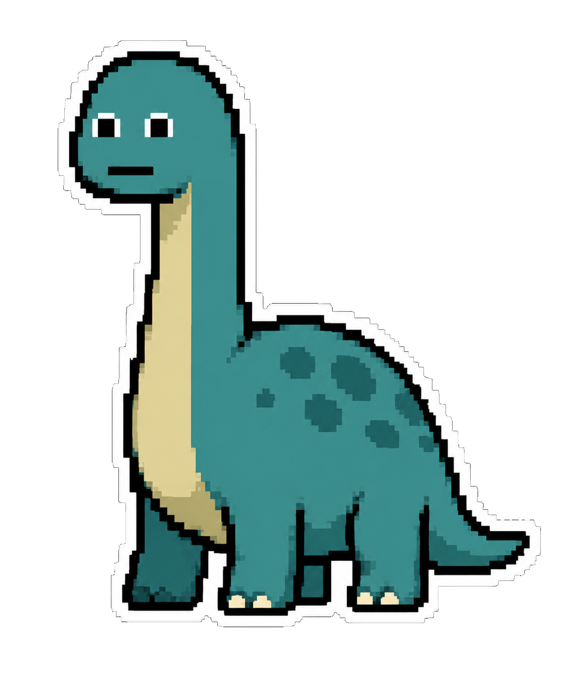

MONTH
01
WHERE THIS STARTED
Three appointments. Watch what it takes.
SO WE BROKE IT.
AND BUILT IT AGAIN.

THE DETAIL AUDIT
ANY WALLPAPER
It is not a window sitting on your desktop. It is the desktop — behind everything, in front of nothing, always already there.
VERSION — · WINDOWS